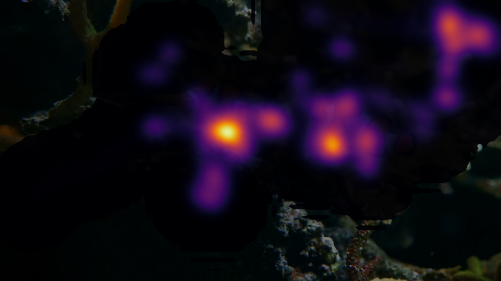
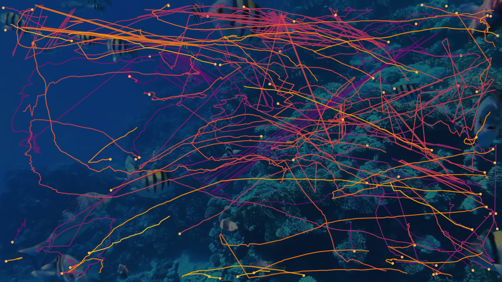
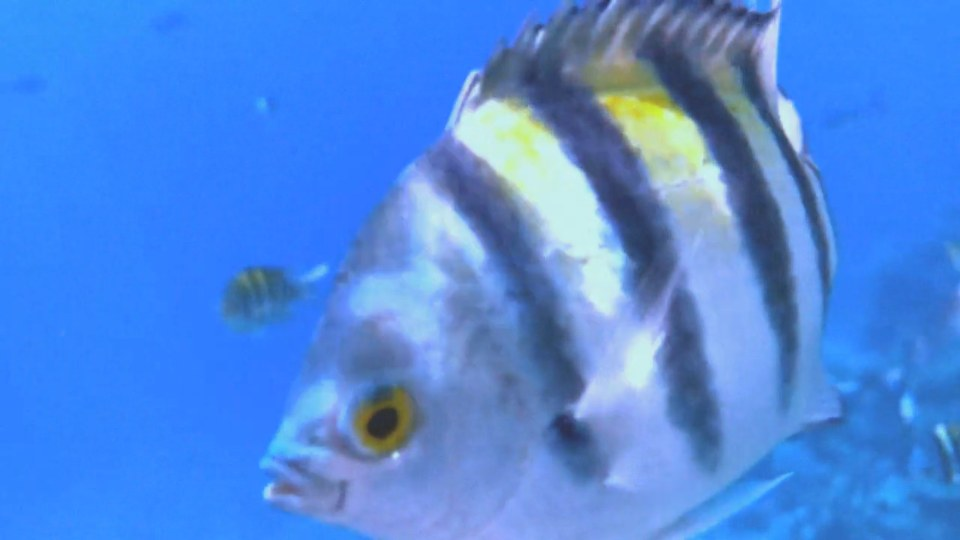
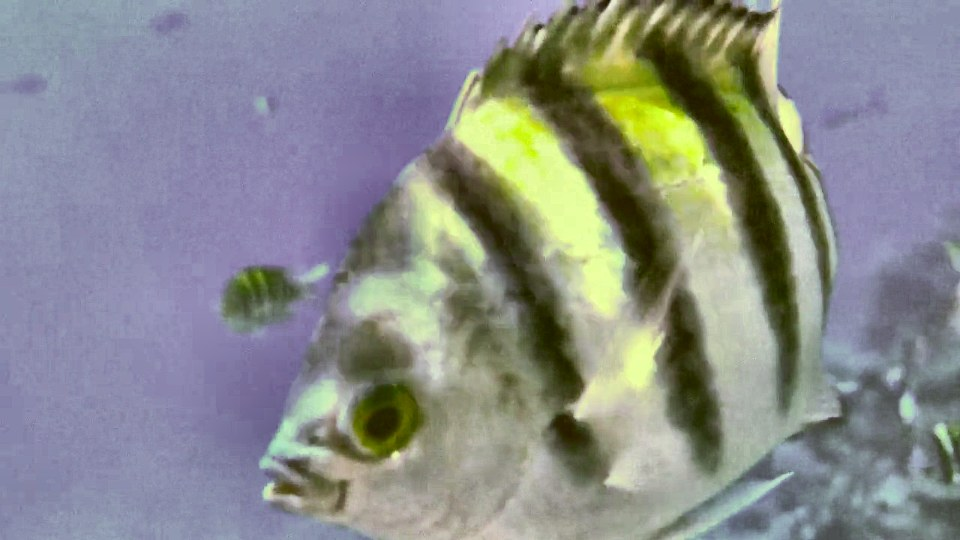
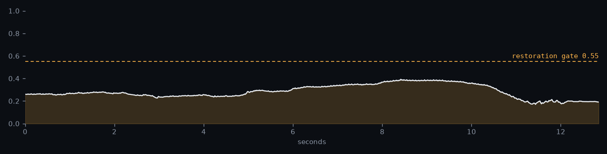

From underwater video to marine science.
SHOAL tracks fish through changing visibility, then turns the trajectories into abundance, diversity and behaviour. Every figure is measured.
Most underwater-CV demos end at boxes on fish.
The scarce, expensive part is everything after: turning boxes into repaired trajectories, and trajectories into quantities an oceanographer or a data analyst can act on. SHOAL weights its effort there.
Ten stages, one dataframe contract between each.
Detection and species identification are decoupled on purpose: the detector runs single class and high recall so the tracker has one stable job.
Ingest
Real timestamps, plus a measured camera-motion guard.
Visibility
Per-frame turbidity index, calibrated against anchor clips.
Restore
Adaptive enhancement that fires only below the gate.
Detect
Single class, high recall, a three-rung fallback chain.
Track
BoT-SORT with Re-ID, tuned for shoaling motion.
Repair
Smoothing, bounded gap-fill, conservative stitching, quality flags.
Trajectory
MovingPandas: residency, stops, activity nodes, flows.
Behaviour
State segmentation from the clip's own kinematic percentiles.
Ecology
MaxN, diversity with intervals, and the honesty guard.
Export
CSV, GeoJSON, and MOTChallenge for independent scoring.
The analytics layer is the contribution.
One thirteen-second reef clip yields 75 repaired trajectories, each carrying speed, sinuosity and quality flags. From there the pipeline computes what a survey reports.
MaxN is the conservative lower bound. The unique-track count is the upper bound, sensitive to ID fragmentation. Both are shown, both labelled.

Residency
Time-weighted occupancy over the frame, from the anemone_static sequence. Two clownfish, two clear hotspots. Legible in one glance, no explanation needed.

Trajectories
Every path carries speed, heading, turning angle and quality flags. Speed is the first derivative of the smoothed centre, never the raw box.


Restoration, measured
A live A/B on 60 held-out frames per run. On a clear clip, forced restoration adds 150 detections that are mostly reef texture, which is why the gate leaves it off there.
Every number traces to a computation. Where the method is thin, the interface says so.
Calibrated, not guessed
The visibility index weights are fit to one clear and one turbid anchor clip, with an ordering check that the clear anchor must score higher. The anchor values are written to disk.
Restoration proves itself
Detection runs twice per sample frame, raw and restored. Enhancement time is measured at roughly 125 ms per 720p frame on CPU, reported as the real figure rather than a target.
Bounded abundance
MaxN, the standard metric in remote underwater video surveys, sits next to the raw track count. The gap between them is shown, not hidden.
The honesty guard
With one collapsed fish class, a diversity index carries no information, so the panel greys itself out. It returns the moment a species head is added.
The camera-motion guard
Global motion is estimated from tracked features. When the rig is not static, the residency and flow figures are labelled as image coordinates, not fixed-world.
Reproducible by construction
Every run writes a manifest with the resolved config, the library versions, and the detector and tracker code path it actually took.
Four sequences, run end to end.
The turbid clip below falls under the restoration gate on every frame.

Per-frame visibility for reef_turbid_matched. The amber band marks frames the gate sends through restoration.
| clip | frames | camera drift | visibility | MaxN | tracks |
|---|---|---|---|---|---|
| reef_clear | 772 | 96% | 0.70 | 20 | 67 |
| reef_turbid_matched | 772 | 62% | 0.29 | 20 | 64 |
| anemone_static | 955 | 35% | 0.77 | 6 | 17 |
| reef_snapper | 749 | 120% | 0.67 | 13 | 41 |
These are open-license stock clips, so the camera-motion guard flags every one. The plan's fixed-station datasets are Kaggle-gated; the fetch script pulls them once a token is present.
Built for the people named in the brief.
Abundance in the metric your surveys already report
MaxN per species per frame, with the unique-track upper bound alongside it.
Shannon and Pielou with bootstrap intervals
Computed on per-species MaxN, not per-detection counts.
Behavioural state and startle timing from passive video
Non-invasive. No tagging, no handling.
Trajectory and tracking exports today, Darwin Core next
GeoJSON and MOTChallenge now; a GBIF-ready occurrence file in Phase 2.
The short version.
The problem. Underwater video is abundant and cheap. Analysis of it is scarce and expensive.
What was built. A pipeline from raw video to MaxN abundance, Shannon diversity with confidence intervals, and behavioural state, exported in standard formats.
Why it holds up. Every number is measured. The restoration module proves its own value with a live A/B. Uncertain results say so.
- HMM behavioural state segmentation
- Polarisation and the shoal-versus-school discriminator
- Regional species head with track-level voting
- HOTA benchmark against ground truth